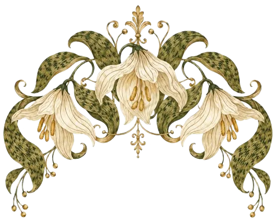
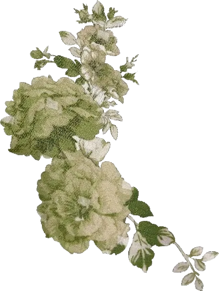
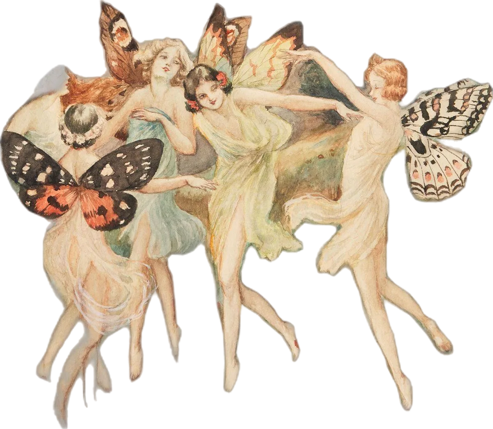
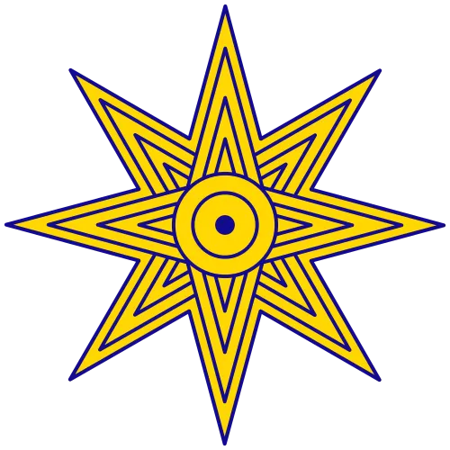
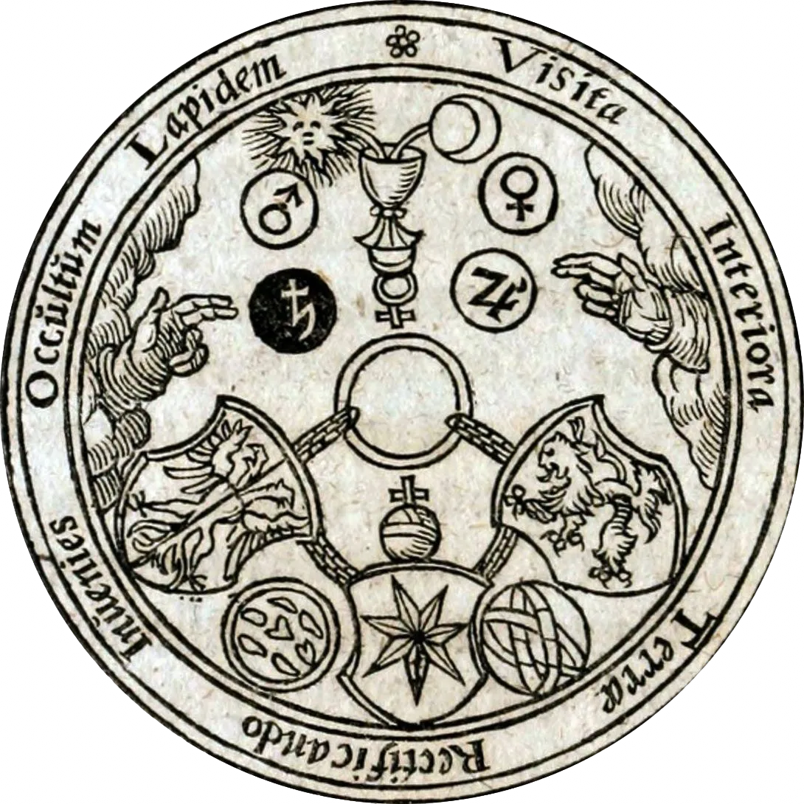

 

2 Июня 1916
В стихии воздуха есть покрывающая шлейф-пленка. Скорее всего, это было известно и древним, но одна такая интуиция многое проясняет. Пленка эта заточена, как лезвие, и вместе с тем прозрачна, чуть мутновата два ее конца смыкаются в пупе земли. Метафорой здесь может послужить-с завязанное декольте посреди двух сферических чаш, которые, впрочем, зовутся ракушками, спиралевидные наутилусы, да и весь лунарный комплекс. Если вдруг птица, ласточка или воробей вьет гнездо под крышей, прямо над вашей головой, остерегайтесь полной луны, если вы не вполне готовы. Тонкость векторной направленности стрелы Амура эфирна а это, в свою очередь, говорит о птичьих яйцах, которые суть три столпа и подпорки всего проявленного, а именно не привычного сущего, т.е того, что не меняет своей твердости в связи со спекуляциями. В лучшем случае на вас готовится охота они, менады луны, закрутят вас в пленку, и от боли в ногах, не переставая танцевать, вы скользнете и расотождествитесь с собою, прогоняя себя от себя по оси двух нитей, уходящих в узел пупа земли. После вы, при должном усердии и с их помощью, возгоните свой пепел, оставшийся от вас и от души, и от тела, и от двойничьего, в сферу огня, то есть в ту сферу, где изначально и было ваше подлинное пребывание, устраняя тем самым дуализм влажного пути а после трансформации превратитесь в конденсат. Тогда, поймав себя в этих ухищрениях, вы увидите точку сечения, то есть вечного возвращения.
► Аудио-Сопровождение
5 Сентября 1916
Бумага одного художника это не та бумага, свойственная другому. Прошу заметить, речь идет не о фактуре, бренде, плотности или цвете. Если вглядеться в кадр из кинофильма с участием Веры Холодной, можно сказать обывательским языком (языком университетской номенклатуры) жанровая специфика, свойственная тому времени, мелодраматически-ноктюрническая салонная резвость… Но ничего это ни о кадре, ни о фильме, ни о чем не говорит путаная навигация или… говоря точнее, трудности перевода одной географической карты на другую, иноразмерную, что, соответственно, заводит не совсем туда. Теперь поглядим иначе, достаточно кадра.. героиня, запыхавшись, растерянно-собранно, изнеможденно облокотилась пепельной головой о дерево. Ее вернувшийся после взгляда через плечо профиль отражает исчерпывающе всю специфику белого цвета как такового и не только, то есть его оксюморон and антиномичность, позитивную парадоксальность по ту сторону законов чистого разума, логики, рацио, логоса и т. д., т. е. чисто фонарно-патриархальных гаечных ключей. Ошибочно полагать, как это делал и Аристотель, и феноменологи, что цвет это акциденция, он всегда на чем-то, а как такового его нет, или, точнее, нечто может быть во что-то окрашено. Скорее верно так цвет - это уже что-то, неразрывная, тонкая, субстанциальная категория вне захвата, посему она и ускользает, и правильно делает. Белый это бумага, будь она например пожелтевшей она сочится, изнурительно жаждет ласки, пылает неустанной любовию / Белизна временно приняла форму волос, лица и платья, чтобы обнаружить себя.
11 Сентября 1916
Женское тело воздействует магически, золото притягивает безумие, а солнце сжигает дураков. Смерть кощея бессмертного спрятана на конце иглы, которая находится в яйце, яйцо - в утке, утка - в зайце, заяц закован в железный сундук, а сам сундук висит на ветвях векового дуба, растущего в тридевятом царстве, в тридесятом государстве, за тридевять земель на море на окияне, на острове Буяне. Хвосты, они же вывернутые электрические провода на столбах, внушительно убивают голубей. Это те птицы, отличные от ворон или чаек от долгого сидения на проводах голуби больше не могут садиться на здания для них все становится хвостом. Оттого они клюют именно в пол, и переезжают их из-за того, что они думают, будто этот электрический хвост их ветка и внизу. А хвост устроен по принципу циклов, которые в урбанистическом пространстве нарушены. Голуби чувствуют канализацию внизу, посему полагают (и верно) что там их дом, но машина переезжает их быстрее. Вороны гораздо умнее, а чайки или воробьи чаще под крышей, я их редкенько слышу там уже два яйца. Одного социального взаимодействия, сквознякового пролета меж мирами людей, достаточно на год уединения, дабы вновь нарастить скорлупу, ведь турбуленция мышц сжигает холодцовые спазмы.
► Аудио-Сопровождение
16 Сентября 1916
Полное признание превосходства изначальной пелазгической космической ночи, сновидений, беспредельно-безбрежного, интуиции над рациональным во всех его проявлениях. Абсолютная власть космоцентризма и вечного возвращения. Тортола Валенсия, Belle Époque эпоха испанского декаданса, к сожалению, неизвестна сейчас. По сравнению с тем, что известно (а эта по преимуществу кабинетные, безопасные, гнусавые лектора, работающие на статус-кво) испанская прекрасная эпоха совершенно не переведена на русский и никак не освещена. Так, по сравнению с ней, хотя французский сплин имеет свое место, и было бы ошибочно просто сравнивать сообразно тому что лучше не говоря о том, что танцовщиц таких уже нет разве что предпринимательницы, а потенциальные поклонники сакрального служения «оперились» в прагматичных, рациональных…… к слову, не буду о вязком. Горячая кровь испанцев и испанок наиболее сорванно прошелестела хворостинкой. Трудно себе представить вообще возможность того, кто способен то ли застрелиться, то ли разориться. Это неразумно, наваждённо, глупо, нецелесообразно, неэкономно… да и вообще незаконно. Мир признаёт функционально-внешнее, наиболее узколобое проявление чего бы то ни было все тонкие миры отвергаются, тонкость вообще молниеносно купируется «трезвым» взглядом самого смотрящего. /- Ни разу еще не встречал я женщины, от которой хотел бы иметь детей, кроме той женщины, которую я люблю: ибо я люблю тебя, о Вечность! Ибо я люблю тебя, о Вечность!-/
В их волосах - оливковых - разорванные нити,
В них пепел прерий, яд и терпкость темной соли.
Смуглянками зовут их дети лисьи.
Они ведут сквозь анфилады суеверий
К триумфу высшей, запредельной боли.
[ Танец Госпожи Тартолы Валенсии Открыть ]
19 Сентября 1916
20 Сентября 1916
В ленивой сонливости из обезвоженных кондиционеров плюются каплями голодного пота из резво вращающихся в полуденном салатово-резком зное страдающие вентиля. Они жадненько наползают друг на дружку, ревниво уворачиваясь обступая ветра, грохаются стеклянной дробью на алюминиевые головы карнизов, стремясь со-слоиться. Солнце, неразборчивое в своей щекотке, кажется <…им…> нависшей мельтешащей лампочкой; посмаркиваются ушами втулчатых труб, поэтому, когда я говорю в изморось, она же, оседая на разжиженной земле, эфирно вбирает в себя мои смыслы. Или снег таким образом можно заговорить, а потом он летит своей дорогой это более интенсивный контакт, у людей слишком много своего. Ноооет... Нооооет... Ноет бело-черствое покрывало на полевых лбах. Сними свои шпильно-красные туфли! Окинь бирюзовым ногтем окружающий мир за класс первый, а вот когда ты, деточка, увидишь гангрену знамен, завопи не стесняясь - «Я ЛЮБЛЮ СОВ, ЖУРАВЛЕЙ И ВОРОН!!!»
21 Сентября 1916
Чувствую добронравный надрыв Якоба Бёме есть в нем что-то притягательно-симпатическое. Если настолько глубоко, как я прожить те улицы, которых никогда не видел, но по которым мы с ним ходили, тот запах именно того несравнимого события времени, который именно там было, и парадоксальная отрешённость, и при этом всем защита дидактикой, при всём пучеглазый взгляд от разверзающегося нечто, что за неимением концептуального аппарата он не мог описать, а с виду на этой игре резких однотонных градиентов ремесленника, отца и дитя своего времени - Зоркоокай UNGRUND. Тот, кто по-настоящему идет влажным путем, не ищет результата трансформации, ни свидетельствующего духа самодовольно пологающимся на сухом пути, ведь свидетельствующего некому, да и незачем.. Само скольжение в ночи и есть единственная, если можно так выразиться актуальность целиком, без остатка и без страховки. Здесь требуеться оговорится, точнее... подчеркнуть, мир современных мужчин - уродливый и мелкий диктат гипертрофированного солнечного титанизма, посему, идя в ночи, требуется насколько возможно свести контакты с внешним миром (как сеткой смвслов к 0) а как с горизонтальной поверхностью - к зоологическому минимому..
22 Сентября 1916
Виделся мне дух вооруженной жрицы, идущей с вестями, какими-то кольцами; блистательные отпечатки на песке багровели опадающим внутренним ознобом, вот-вот маясь припасть обратно, а знойные дубы, хирея, склонили свои кроны…
► Аудио-Сопровождение
24 Сентября 1916
Для содержательной герметической гигиены свой онтологический статус - статус себя - требуется хранить в тайне. Обнаружение оного для самого себя, его узнавание - уже внушительная честность. Но вот нераспространение его любому, каждому, всякому (близкому, далекому, родному, безродному) - внушительная доля
// Имея характерную черту самостоятельно, непринужденно, кажется даже случайно, хрупко доводить себя самого до исступления, меланхоличной крайности, глубочайшего уничижения без упоения этим, дает интересную возможность быть неподвластным похожим влияниям извне, то есть в каком-то роде - определять, а значит - присваивать ценность.
25 Сентября 1916
Если всё обладает одинаковым онтологическим статусом, то им не обладает ничто. Точнее, начинает доминировать низшая из констант - животный страх исчезновения, сковывающий anima caelestis и anima mundi. Без души нет жизни как таковой, значит, здесь совершенно нечего делать - ни «здесь», ни «там», - но и не делать тоже нечего. Начиная с Гоббса и Спинозы, европейская мысль онтологизирует эго, превращая его в сущность человека. Если для Гоббса концепт исчерпывается чистым выживанием, то у Спинозы эго якобы подчинено активному разумному началу. На деле этот разум лишь функциональная заглушка, не несущая в себе никакого нового качества. Вся нынешняя «радикальная» мысль держится на безопасном, чисто теоретическом хипстерском восторге. Это философия сытости, взращённая в условиях невиданного комфорта, защищённая правовым государством и медициной. Без признания качественной иерархии бытия и уникальности духа эта радикал-философия неизбежно капитулирует перед банальным страхом смерти. Именно этот страх последние века два инфицирует культуру смерть мыслится как абсолютный рок, фатум, за которым следует ничто. И здесь закономерно включается локковская идея pursuit of happiness - культ индивидуального счастья, примитивного желание, пришедшего на смену подлинному, божественному энтузиазму (en theos), отражения макрокосма в микрокосме, к слову доступному и сейчас, но их выбор, пасовать… Оттого и тень от столба, что знает о столбе только как о тени на асфальте, не беря во внимание переливы его фонаря, окантовку и вертикаль знает о столбе ограничено как о препятствии для света, но слепо упускает о переливах фонаря, о самой природе излучения, эссенции, энергии и цвете. Всякий желающий счастья - материалист до мозга костей и живота. Даже если его убеждения и отличны, они в конечном итоге видятся для него в качестве счастья, точнее - его количестве индивидуального благополучия, состоятельности, успешности в калькуляции и сортировки который неотрывен от идеи прогресса, так как она в свою очередь фундаментальная онтологическая константа без которой счастья, экономики в ее современном понимании, образа жизни, мысли, отношений, взаимосвязей, планов на эфемерное будущее - нет. Противоположное количеству - состояние абсолютной безобъектности, чистое, беспричинное самоизлучение или же - Аллах, Уджуд (وجود). Но есть интересный нюанс, моя интуиция верна, следовательно она на что-то натолкнулась, не шла ли она по фракталу, точнее неоплатонической сфере, где жилы клена сумрачно напоминают свои корни? Посему исключительно поэзия в широком смысле слова, и занимает свое главенствующее место в области гносеологии.
26 Сентября 1916
Общение с людьми обыкновенными, приносит лишь глухое, тоскливое вязкое страдание. Их умы совершенно чужды ласке вдохновенного взгляда, глазам пронзительных губ, буранам чёрных страстей, заснувшим поперёк горла наваждениям, спонтанным проискам. Но попытка сблизиться с творцами художниками, музыкантами или поэтами оборачивается ещё более жестоким разочарованием. Вторые слишком деспотичны и безраздельно заняты собой. Они, точно так же как я, ревниво прячутся в собственных тихих омутах, из-за чего любая близость с ними превращается в обоюдную, мучительную несвободу, ощущение, что вот-вот что-то надломится, куда-то вспорхнёт и, разуверенное в своих силах, поникнет, раскатится, счешет нос о лужу!
► Аудио-Сопровождение
28 Сентября 1916
Разъедай! Разъедай! - вдохновленное тело.
Разъедай до излишков волос,
Убегая коснись панцирями бело-саженцев опухающих Роз!
На брусчатке мощенной грибами, на пруду - заволоченном рвами
Отпускала Цирцея зубо-скаленных Львов!
30 Сентября 1916
[ Холодный воздух - К. Ступин Открыть ]
1 Октября 1916
Заметил, что драма неординарных эзотерических, но всё-таки мировых, а значит, обобщающих доктрин (например, кашмирского шиваизма) в том, что либо из-за незнания языка и отсутствия упоительного погружения в культуру они не раскрываются полно, либо происходит и то, и другое. Это другое является в виде усреднения до общего знаменателя для всех интересующихся. Меня терзает, что пропадает само жало из за разных росписях на страницах учебников, монографий и тому подобного оттого-то и важен личный миф, и его завороженное созидание
5 Октября 1916
Душа согласно неоплатонизму - это цыганка, душа это - танцовщица, Кармен, ОНА - длинноногая чужестранка. Душа - это сапоги скороходы, душа - это ковер самолет! Душа - скатерть-самобранка, разглаженная на кипящих борщах, ждущая, что бедная Лиза схватит ее и пойдет смачивать своими слезами, обхватив двумя порозовевшими бедрами, краснеющими на послеобеденном солнце сквозь вой тонкой мухи садящийся на искры побелки пастозно сосульчато свисающий подокойнник!
6 Октября 1916
Вместе с желанием кому-то что-то доказать пропало смежное, в симбиозе с первым, перманентно-фоновое состояние ожесточённой гневливости, наконец 4-летнее не менее мягко говоря, ожесточённое затяжное Нигредо прошло.
8 Октября 1916
Есть существа, заставляющие всем своим нахождением рядом, либо поодаль, в принципе, в радиусе нашего взгляда даже, быть может, знакомые, либо случайно, за беседой встретившиеся заставляющие тебя сжаться, сузить горизонт, уподобиться на время, похереть. Какое-то неуютное бдение, это оттенки негативного, асимпатического резонанса, когда ты ударяешься внутрь искусственным тупиком, когда чувствуешь себя запятнанным, каким-то не таким, спазмированным, не собой. Дело даже не в них как таковых, но дело в них для тебя и обязательно настоящее желание помыться, убрать всю растерянность, претенциозное мещанство сморчками которым они тебя заражают, какую-то даже не робость, а… неуклюжесть, и ты всасываешься в эти поры фальши по первой. Что перед носом потрясли с жалобным лицом пластиковой чашечкой, что удивили фигой, помешкали, высосали внимание… Даже трудно окончательно охарактеризовать … тля, затхлость антипатии это. Другое дело это возникновение поистине вдохновляющих, разрывающих от радости резонансов, как будто пена бурлящих источников ковровой лианой расстилается, и ты нежишься, творишь, искреннее ЕСТЬ!, настолько полон, как дитя, незаинтересован ни в чём, что вне. Пожалуй, такие резонансы создает литература, определенные люди вдали быть может, умершие, либо стремящиеся перейти на другую сторону, туда. Туда, откуда блеет их пятикрылая сова, жилистой шеей трескает вены жирафьи. Это люди ПРИСУТСТВИЯ, люди эвристическо-витального катализированния, вызывающие словом к бытию, перечислять я их не стану - незачем) Они одарены Мнемозиной, поцелованы её дочерьми, её нехотливыми дочерьми незамечающими, неуступными…. (Ревнивыми?))) Ооооо…. избавь меня от первых. Почему я забываю шляпу? Отчего самонадеянно беру пинцет? Или оттого что кора смолиста, или оттого что…..?! Помылся в мёде? Впрочем адепту, прикасающемуся к сакральному желательно направлять свои бушующие внутренние проекции, страсти и архетипы на символические системы, а не баламутить меня своим ментальным калом
9 Октября 1916
Знаки и символы правят миром, случайностей не бывает, уже вторая за пару дней, то-ли металловидка-гамма то-ли углокрыльница с-белое, впрочем…. водичку с сахаром налил ей, еще так трясется забавно, как шатёр.
10 Октября 1916
Она просто залетела и ушла… Как уже упоминал вторая, вроде, за неделю. Потом носилась под полом, под креслом, на ковре... У неё какие-то проблемы взлететь были «печать на крыле», как пел Башлачёв. Я рыдаю и от песни, и от ухода бабочки, от второго еще больше как никогда. Она ещё дёргала крыльями на боку, думал это она так очищается. еще вдобавок по колористике полное тождество картине которую писал доселе и которую пишу, только более камерную….! Пожалуй… это еще сильнее окутано тайной и скорбью, ведь медицинская смерть человека ни о чем не говорит, а тлеющая судорогами бабочка, у нее другое царство… вечное, что спорно с человеком….
[ Все от винта ]
11 Октября 1916
Ребенок видит дерево больше и кронистее, так же и траву зеленее, оттого что у него вместе с зубами глаза молочные. Неверно думают, что дитя маленькое, а коль маленькое с большеньким деревом, вот, значит, именно из-за этого. На этот анализирующий, посторонний взгляд можно возразить - ну знаете ли, например, а какая разница между сорокаметровой сосной 40 метров и ребенком 50 см, точно так же превышающим его на 3.2 медианным ростом «взрослого человека»? Согласитесь, что маловероятны ничтожные проценты их соотношений по сравнению с деревом. Они оба согласно ученым позитивистам должны видеть все выше, но ведь тут закралась метафора… С другой стороны, если ребенок ниже, то при взгляде на застенчивые кроны, которые уж очень напоминают корни, он смотрит на то, что ему ближе, молочными глазами. Вообще трудно представить себе, что есть разделение между верхом и низом, да и плоскогорье не разделишь, да и вообще ну ничего нельзя сказать, используя этот патологоанатомический взгляд. Коровы, например, ближе к молочному взгляду трава зеленее у ребенка, так как глаз видит благодаря корове-ребенку. А о взрослости говорить вообще невозможно кто-то имеет зеленее траву, другой - ближе к аисту, третий - имеет паспорт, четвертый - ближе к щенку, пятый - женился. Стоящий и смотрящий издали аналитик-позитивист к царству пчел и муравьев... Он вырастает муравьем либо им был, либо его насильно, как всех нас, цивилизация стремятся размазать по перепончатокрылому типу сознания. Потом мы надеваем сидя, закрыв один глаз и пялясь на таблицу Сивцева, настойчиво выписанные окулистом очки, так как оказывается, мы плохо стали видеть и/или мы дальтоники. Но почему? «Оттого что стареем, или будем стареть» говорят нам. Но какое это имеет отношение ко мне? Что значит «плохо видеть»? Как импрессионисты? Или линзы, ведь не всем идут очки», говорит божество тенденций. Значит, на нас наконец посмотрят и увидят? Я правильно понимаю на нас, слепых в линзах, посмотрят слепыми глазами другие линзы стремящиеся увидеть самих себя? А кто, собственно, видит теперь, где здесь я? Трава? Корова? Глаза?…. Именно поэтому можно назвать эту цивилизацию - цивилизацией блефа, а изящьнее, цивилизация «Ш, Б, М, Н, К»
[ Прогулка Открыть ]
12 Октября 1916
Скевоморфизм был единственной надеждой на избыточность, творчество, компромисс с плоскостью экрана и барьерность густоты. А оказалось, что его трактовали просто как имитацию «реальности» некоторый эпистолярный, барочный мимесис. Но дело в том, что, мейнстрим перейдя к минимализму (который, впрочем, является полностью прямой, светско-цифровой интонацией протестантской этики и кальвинизма в частности), мы забыли ведь ничего не должно отвлекать от самого главного. А что самое главное? Исполнение предназначения. Предназначение же заключается в существовании абсолютно безвкусном, мелком, равномерном, многолетнем, долгожительном, рутинном существовании. От жизни (которая здесь понята как эффективное выполнение задач) не должна отвлекать жизнь. Cерые тени на закругленных плоскими восемью пикселями иконках, шаблонные джава-фреймворки и так далее, и так далее. Если в век сексуального пуританизма людям снились в трактовке фройдом (а согласно Юнгу по крайней мере, согласно той общей тенденции, сновидения исполняют компенсаторную функцию. Но, прошу заметить, это исключительно расхожее обобщение некоторой калькуляции из обобщенных снов мир сновидений намного более глубок, извилист и порист, как бобовые двери, прекрасен, центричен, фундаментален, изначален, автохтонен, божественнен, исчерпывается только вашем уровнем медиумичности) подавленные фаллические и вагинальные комплексы, то через лет эдак пятнадцать, я вас уверяю, мы увидим сны с плачущими плоскими пробелами, отрезанными, покрывшимися пылью нумпадами, выпуклыми, пробивающимися сквозь мыльную воду кинескопами. Например, этот сайт весит полгигабайта из-за несжатых изображений, музыки, svg и видео, он написан с нуля на голом джава-скрипт, css, html без использования сторонних библиотек....
14 Октября 1916
...Мы затравленно мчимся на выстрел... У Высоцкого, голос кипящие-бурлящей воды
► Охота на Волков
[ Волчьи Ягоды Открыть ]
16 Октября 1916
Несколько слов о тушках, канте и балконах... камлания
► Несколько Слов
17 Октября 1916
Свою возлюбленную стоит искать либо в сказке, либо во сне
[ Видео Открыть ]
18 Октября 1916
Дневной рассудок настолько ограничен, что если бы знание о его катастрофической ограниченности стало законом, все бы только дремали, дети в люльке, не-дети - в постели, бомжи - на лавке. До такого уровня, что мне начали чужие сны сниться люди, которых я видел мельком, с кем были мало-мальские конфронтации. Начал узнавать о них всё во внутреннем рассказе голоса во сне бабушка запрыгивает в окно, дети сидят на деревья, в эту нору я ставлю воду как в холодильник, мускулистые мужчины на стероидах покрылись кристалловидной неочищенной патокой похожей на мефедрон, другие мне говорят разминаться и готовиться. «Но я умею садиться на шпагат, отвечаю (некоторой фигуре чье имя на стану разглашать), и как-никак ходил на единоборства лет эдак семь». Мне рассказывают о этой фигуре досконально всё всё, еду на велосипеде, загадываю у джинна научиться летать. Кто-то перехватывает мою рацию и говорит джинну «Нужен такой то такой то - дом». Появляется знакомая ветхая избушка, совершенно к тому же не та что загадывали, собаки заныривают, кружатся на пороге у мелководного забора, меня практически хватают за ногу когда я еду на велосипеде и….. я в другой стране где работаю дворником… Я И ЕСТЬ ВЕЧНЫЙ СЕВЕРИН! МЫ И ЕСТЬ ВЕЧНЫЙ СЕВЕРИН! ИСТИННЫЙ Я И ЕСТЬ ВЕЧНЫЙ АТТИС! ОНИ И ЕСТЬ ВЕЧНЫЙ СЕВЕРИН; ВАНГОГ; РЕМБО; БЛОК! Я ИСТИННОЕ И ЕСТЬ ВЕЧНЫЙ СЕВЕРИН! ВСЕ И ЕСТЬ ВЕЧНЫЙ СЕВЕРИН!!!
[ Чiтать книгу ]
19 Октября 1916
I imaginatively shape-shift into dust-bunnies in the wundran-enigmatic nursery beneath Alice's cot in Wonderland.
20 Октября 1916
Лавочники совершенно потеряли всякую элементарную тактичность. Совершенное ими преступление уже делается, пожалуй, наглядно до такой дикости, что, уже не дожидаясь отхода в вечность художника, они нагло воруют, будучи пойманными за руку как дешевка, те символы, что прошли через оного. Вот отличный пример с Норштейном и Франческой. Посему я хочу продекламировать следующее иметь что-то общее с вайшьями категорически нельзя - болезненно, ядовито и серо. Маховик капитализма настолько раскручен, что наглядно и цинично, при жизни автора, вырывают сакральные символы из нежных рук Норштейна и Франчески. Посему не продавать им свои идеи, не идти к ним в наемное заискивание, не ждать от них признания или оценки пожалуй, единственный способ огородиться (помимо осознания того, что никакого авторского права нет, а через художника говорят силы иного порядка). Но дело в том, что вайшьи разгневали богов. И уже теперь их будут судить не по их созданным напёрсточниками краплёным законам, оберегающим соседей по рынку, а сообразно сакральному правосудию Радаманта, Страшному суду, Тартару, в который, есть все основания полагать, мы и заброшены, и находимся в нём, если соглашаемся с их правилами, точнее, внутренне принимаем их влияния, движемся по смысловой-мировоззренческой системе координат их мира. Потому что назвать чем-то большим климат их жизни как тартар невозможно. Они, повторяюсь, приватизировали, позарились на то, что им не принадлежит, а принадлежит богам, и были пойманы. Это хула на Святого Духа, им был дан шанс остановиться, но они отказались, это их выбор…
21 Октября 1916
Когда образ созерцается на расстоянии он благ, чист и божественен. Но стоит попытаться овладеть им физически... Впрочем, попробуйте, столкнитесь, дерзайте! Или вам сами покажут, и-и-и обязательненько покажут, продемонстрируют такую пресность! Когда вы, заряжены высочайшийм, священным трепетом О, ничего, кроме жалости, стыда, испанского стыда в ответ на ваше тремендум, некоторые случаи не вызывают кроме какого-то мурашечного стыдочка, от которого хочется зажмуриться, скрутиться, подобного въевшемуся оттенку кофе на немытой кружке. Они так кольцами, кольцами, с промежуточками, снова, снова и ХлОп… Происходит то, что называется дистилляция земного эротизма. Мы наконец пройдя через это обретаем ясность, предельную ясность ту, которой, быть может, нам никогда не предвидится более, ясность нашего экзистенциального здоровья. Образ Прекрасной Дамы...
22 Октября 1916
Внимание! Я не имею никакого отношения к этому боту. Никаких каналов и пабликов у меня нет в Телеграме, единственная связь со мной это почта. Видно, кто-то создал бота, паразитируя на моей закрытости, и они были наказаны, выманивая бублики-звёздочки. Еще раз прошу заметить, что никакого отношения к этому всему я не имею. Единственный мой ресурс hermeticum.ru waldemarbuben.space (в названии «L», не через «I») / и почта patron@hermeticum.ru Внимательно несколько раз всё проверяйте!»
24 Октября 1916
Скоро зима и ночь будет длинннюща —— длиннюще ——————— длиннюща)
25 Октября 1916
я - валик, я - шпатель, я -- строительный грунт, левкас, я известняк, я глина, я - повивальный пупок!
27 Октября 1916
Metis + Bie. Одиссей + Ахилл, Зевс + Геракл, Метида + Аякс, Рука + Пальцы, Голова + Язык, Лицо + Мимика. Для того чтобы услышать музыку сирен, требовалось быть подготовленным, посвященным и/или двигаться в этом направлении. Чем же пренебрегает наша цивилизация, отрезав все возможные хотя бы аллюзионные, междометийные, метафорические параллели с мифом? Так это тем, что репетативная запись имитации сирен включается каждую ночь перед очередной бомбежкой. Каждая ночь представляется крайней. Больший психологический террор именно из-за этих сирен, нагнетания и совершенно равнодушно-уничижительного отношения в нашем мире техногенного ада, который, смею заметить, не только мне предлагают слышать каждый день, ожидая прилета. То есть полностью отрезанные от смыслообразующего metis, цивилизация агрессирует, совершая голое насилие выхолощенным bie. Я совершенно не представляю, как жить в таком обнищавшем климате. По крайней мере, я глубоко подозреваю.. а можно ли вообще назвать это жизнью… К слову, это лишь одна, частная константа, которая служит оправданием к тому, почему стоит обращаться к своим внутреннейшим ценностям - искать возлюбленную в сказке либо во сне, испытуя трения на себе, противопоставить этому миру блефа свое чистое «присутствие» утверждать примат пеласгийской ночи, беспредельно безбрежного, иррационального, интуитивно, интровертно-чувственного над всем тем, что нам предлагают считать за «жизнь, реальность». Ничем большим, чем сиюминутная сводка, эта цивилизация вместе с её реальностью и убогим климатом не является... Самое парадоксальное что все это случается со мной в 19 лет. Такого колоссального масштаба близость «смерти», осознание, что никакое «я» не умрет и что я гораздо больше, чем это «я», что в этот самый момент предельного физического скукоживания обнаруживается прорыв вечности, стук в дверь... И что самое интересное что после всего этого, как они хотели эта цивилизация, блефа, я не ушел в обывательский цинизм, ожесточенность, не превратился в агента этого климата. Я дал им всем настоящую войну - войну духа.
32 Октября 1916
ДОПУСКАЮ ТОЛЬКО АУДИО/ВИДЕО ФОРМАТ ОБЩЕНИЯ, В ИСКЛЮЧИТЕЛЬНЫХ СЛУЧАЯХ - ЖИВОЕ, ЭТО ЧУДОВИЧНО! ЧИТАТЬ ИИ СЛОП КОТОРЫЙ ВЫ МНЕ ВЫПИСЫВАЕТЕ, ТЕКСТОВОЕ ОБЩЕНИЕ ОБЕСЦЕНИЛОСЬ ДО НУЛЯ.
33 Октября 1916
Земля - это живое, одушевлённое существо; каждый район имеет ему свойственную, непреодолимую силу Гения Места (Genius Loci) и свои собственные колебания, вследствие чего он влияет на населяющих его существ, он преобразовывает и превращает. Путешествующие остатки этого знания, которые дают нам представление о том, какой может быть основанная на грандиозном фундаменте абсолютно иной науки и техники цивилизация, - это Захории (ясновидцы и искатели кладов с помощью волшебного жезла), которые обнаруживали течения грунтовой воды колебанием и отклонением волшебных палочек. Та наука делает возможным настоящее знание земных недр и посредством своей магической технологии способствует силе, которая может преобразовывать землю, причем маг - это работник, который мог бы создавать из мира всё, что природа не в состоянии создавать из себя и что без него оставалось бы незаконченным. Преодолеть критическую фазу дематериализации, регресса Земли в Кали-Юге можно, только изобретя Новую Землю, выдумав её, как выразился бы Рильке, позволяя ей возникать сначала невидимо в нас. В противном случае конец света будет действительностью, и это прогнозы эддической волшебницы Вёльвы. Так как механистическая наука и чисто рациональная «технология» нашего современного времени, которые не превращают Землю, а владеют ею и хотят принудить её своей волей, уничтожат, в конечном счёте, её вместе с людьми. В самом деле идея человека потеряна, однако люди невиданно размножаются, идея знания потеряна - количество информации все возрастает идея наслаждения распылилась на сотни мелких, легко удовлетворимых желаний. При отсутствии метафизического принципа, полярной оси бытия, жизнь раскачивается и барахтается в дурной невесомости, в лихорадочном поиске твёрдой почвы, которую ищут почему-то в будущем, надеясь сложить из бесконечных минусов настоящего грандиозный плюс… когда-нибудь. А что остаётся делать, если прошлого нет. Вряд ли неоплатоники могли предполагать, что на границе «иного» (пятая гипотеза Парменида), где прекращается влияние «первоединого», возникнет человеческая схема, среднестатистическое нечто, составленное из наиболее часто встречающихся «достоинств» и «пороков» и заменяющее Бога и богов. / Мигель Серрано & Евгений Головин
| | | |  | | | | |
35 Октября 1916
До чего же я наследственно любвеобилен практически до сотериологического восторга! Какая услада плыть в этом затуманенном наваждении! Если и есть не покидающий время от времени меня бог, то это Эрос один из немногих, первичное, опасное божество, что наказало Психее никогда не пытаться увидеть его лицо при дневном свете, не расчленять и не овеществлять. Но как только завистливые сестры Психеи зародили в ней крамолу через любопытство и сомнение, капля раскаленного масла с лампадки света обожгла плечо бога, и он, оставив ее, упорхнул. И только среди таких же многих, пожалуй, Пигмалион имел должное уважение!
| | | |  | | | | |
37 Октября 1916
В гробу я видал эту псевдоинтеллектуальную мастурбацию, когда режиссер включает камеру на двадцать минут в прокуренном парижском кафе, сажает двух снобов, а они в свою очередь унылыми голосами начинают зачитывать мне до банальности нищие философские манифесты… Совершенно беспомощное кино, которое совершенно не удосуживается из за своей французской тугодумности следовать формуле показывать, а не рассказывать, оттого что якобы «общество спектакля» усыпляет бдительность рабочего класса, интересно если их посадить кафейных-хипстеров макрсистов рядом с самодовольным ноющем пролетарием смотрящим боевики, насколько сильно последний обрадуется что его интересы защищают совершенно не его интересы… Я знаю столько примеров вершин массового кино, и если снять с них ленивый потребительский слой просмотра, то всегда можно будет обнаружить или затертую драматургию (хотя прекрасная драматургия вечна), или штамповку-процедурал, построенную на Артуре Конан Дойле, или глубочайший мифологический метанарратив, как в случае с 1, 3 и 5-м сезонами Побега (Каниэль Утис - никто, в 5 сезоне транслирующий Одиссея или Орфический образ самого Майкла в первом сезоне). (Хотя во втором сезоне, хоть он и является дойной коровой, являясь унылым роуд муви, было бы интересно увидеть отдельный фильм продолжение где Патошик (к слову полностью образный ряд Эдгара По) шизофреник, строит самодельную лодку, плывя с дворовой собакой из Чикаго по вырезанной у слепой старухи картине-карте мельницы в Нидерланды) Или феноменологический элан виталь Бергсона и Дильте как в случае Пилы. Или прямо читаемая символически утроба-камера, переход от линейного времени во время in illl tempore, мифическое вечное с сопутствующим шансом инициатического перерождение в утробе-комнате, и/или некоторая попытка возвратить умершего Гидеона, через воздействие на самые понятные соматический регистры американского общества, попытка высокая… Притом это заслуга Тобина Белла, (который играл Качинского еще) ведь он, как потенциальный писатель, помимо того что заставлял корпорацию переписывать сценарий в жанре, который этого совершенно не предполагает, так притом вел дневники, где писал биографию (тут же глядя в феноменологию) главного героя что он ел, что слушал, как и куда ходил. Это запредельный уровень в рамках порно-ужастика, который далеко превосходит этот самый порно-ужастик, как и своим сеттингом, где маньяк не маньяк, но и не ненадежный рассказчик. Тобин Белл, как представитель старой школы кино, притом полностью на стороне того героя, которого отыгрывает. Он не клоун-убийца Крюгер (хотя идея, что во сне можно умереть, увидев Крюгера, быть убитым на яву им и т. д., очень завораживает тут тоже можно порыскать), он так же и не таран Вурхиз. Впрочем, столько могу я рассказать обо всем этом, что просто пока тут ограничусь небольшой заметкой. Ограничусь лишь тем, что скажу, глубина восприятия искусства прямо пропорциональна уровню личной градуальности человека. По преимуществу, в данном случае даже не важно, что смотреть, читать, слушать. Особенность в качестве порезов, пронзающих игл размашистый шлепок итд.
3 Ноября 1916
Влюбленные девушки перенимают и зеркалят тех, кого они любят. Но я не понимаю, как общаться в таком случае с кривым зеркалом того «себя» которым ты являешься в общении с ними, и которое они благополучно перенимают. Быть может, довольны те, кто вполне себе хорошо себя чувствуют и, откинувшись, сыто чешут пузо, упиваясь этой лестью. Может быть и так, но меня категорически не завораживает и даже отталкивает до брезгливости эта зеркальность. Зачем мне живое подтверждение моих недостатков, которые всегда будут теми или иными? Я их и так знаю, но мне их еще и вываливают. Хоррор… Подождите хотя бы до того, пока тот с кого вы перенимаете будет на дальней дистанции, или и вовсе умрет, став тем самым вечным и бессмертным в этом случае, или возьмите миф, только последний не ограничивается этим) Влюбить в себя зеркальностью можно разве что плоского обывателя, притом это самый доступный способ. Может, оттого-то так и раздута женская эго-гордыня перерастающая в истеричную стервозность, что не приходится делать с обеих сторон делать хоть каких-то качественных усилий, испытуя колоссальные внутренние переживания. Оттого вообще не удивительно, как позорны эти однонощные союзы… Что-то потеряли мы в нашем мире современности, что-то, что скоро я чувствую сильно ох как отозовется, до такого уровня что потребует категорического слома, реструкта)
[ Томные Монологи о Любви / и другие видео (глядите на ютюб канале) Открыть ]
5 Ноября 1916
Притом символическое, идеальное и глубинно интимное имеет колоссальный приоритет над «реальным» совершенно не могу иначе, у более грубых личностей это зовется «жизненным опытом» который на самом деле нужно артикулировать как - «череда толщи кип трусливых компромиссов» (термины символические и реальное к профаническому психоанализу в моем контексте никакого отношения не имеют.)

| | | | ЭТИ КАРТИНЫ НЕЛЬЗЯ СКАЧИВАТЬ ДЛЯ РАСПРОСТРАНЕНИЯ, ПЕРЕСЫЛАТЬ ИЛИ ДАВАТЬ СМОТРЕТЬ ВСЕМ ЛЮБОПЫТСТВУЮЩИМ. ОНИ ПРЕДНАЗНАЧЕНЫ ТОЛЬКО ДЛЯ ******* ****. КТО НЕ ПОСКУПИЛСЯ НА УВАЖЕНИЕ И ПОЧИТАНИЕ ПУСТЬ СМОТРИТ. КТО ПОЛУЧИЛ ИХ НИЧЕГО НЕ ЗАТРАТИВ, ПУСТЬ ЗАКРОЕТ ЭТОТ САЙТ. ИБО ЗАПЕЧАТАНЫ ОНИ СЛОВАМИ АДЕПТОВ. И ЛЮБОГО КОСНЕТСЯ ПРОКЛЯТИЕ, КТО ОСЛУШАЕТСЯ ЭТОГО ПРЕДУПРЕЖДЕНИЯ. | | | | |

|